یک بار بساز، دیگر هرگز انجامش نده
در دو فصل نخست مرا شناختی و یاد گرفتی درخواست درست را به من بنویسی. اما هنوز هر بار خودت مینویسی. در این فصل آن گام آخر را هم برمیداریم: جریانهایی میسازیم که کارهای تکراری را بیآنکه دستت به آنها بخورد، بهترتیب و هر بار به یک شکل انجام میدهند. ابزارمان n8n است. لازم نیست کد بلد باشی؛ جعبهها را به هم وصل میکنیم.
در پایان این فصل
- میدانی جریان، گره و محرک چیست — تمام این حوزه در سه کلمه
- نخستین جریانت را در n8n ساخته و اجرا کردهای
- میتوانی وبهوک و API را در یک جملهٔ ساده توضیح دهی
- میبینی داده چگونه از گره به گره میرود
- مرا درون یک جریان میگذاری و فرمول فصل ۲ را در گره مینویسی
- میفهمی عاملی که ابزارش را خودش برمیگزیند چگونه چرخه میزند
- از پیش ساختهای که وقتی جریان شکست چه بشود
فهرست
01در هفته چند بار همان کار را میکنی
خواندن پیام رسیده و دادن یکی از همان سه پاسخ. نوشتن اطلاعات فرم در جدول. هر صبح جمع کردن فروش دیروز و فرستادن برای کسی. گذاشتن فاکتور در پرونده وقتی میرسد. هیچکدام سخت نیست؛ همهشان تکرار است. و هر کاری که تکرار میشود، کاری است که میتوان یک بار شرحش داد.
خودکارسازی دقیقاً همین است: کاری را یک بار شرح میدهی، بعد آن کار خودبهخود انجام میشود. وقتی خوابی، وقتی در تعطیلاتی، وقتی ده مشتری همزمان مینویسند. آنچه در این فصل «جریان» مینامیم همان شرح است.
فرمولی که در فصل ۲ یاد گرفتی اینجا معنای دیگری پیدا میکند. آنجا درخواست را هر بار خودت مینوشتی. اینجا آن را یک بار مینویسی و درون یک جعبه میگذاری؛ جعبه هر بار که فعال شود آن درخواست را دوباره برای من پر میکند. اینکه فرمول را یاد گرفتهای یعنی نیمی از این فصل را از پیش تمام کردهای.
همین حالا انجام بده: سه کاری را که این هفته دستکم سه بار انجام دادهای و هر بار یکسان بوده بنویس. تا پایان فصل یکی از آنها خودش انجام خواهد شد.
02سه کلمه: جریان، گره، محرک
همهٔ واژههای ترسناک این حوزه به سه ایدهٔ ساده میرسند. سهتا را بدانی، باقی را با کلیک روی بوم کشف میکنی.
جریان
شرح یک کار از آغاز تا پایان. «فرم آمد → در جدول بنویس → به من پیام بده» یک جریان است. در n8n به آن workflow میگویند؛ روی بوم از چپ به راست خوانده میشود.
گره
یک گام از جریان — یک جعبه. «در جدول بنویس» یک گره است، «ایمیل بفرست» یک گره است، «از کلود بپرس» یک گره است. جعبهها با سیم به هم وصل میشوند.
محرک
نخستین گرهٔ جریان؛ چیزی که جریان را بیدار میکند. «هر صبح ساعت ۹»، «وقتی فرم پر شد»، «وقتی کسی به این نشانی داده فرستاد». بدون محرک، جریان خواب میماند.
کلمهٔ چهارمی هم هست، اما نتیجهٔ آن سهتاست: اجرا. وقتی محرک یک بار بیدار شود و جریان یک بار از آغاز تا پایان بدود، به آن اجرا میگویند. هر اجرا ثبت میشود؛ بعداً میتوانی ببینی کجا ایستاد و چه تولید کرد.
همین حالا انجام بده: یکی از سه کار بند ۰۱ را در این قالب بریز: «وقتی ___ → ___ → ___». جای خالی اول محرک است، باقی گرهها. جریانت روی کاغذ آماده است.
03n8n چیست و چرا آن
n8n ابزاری است که جریانها را در آن دیداری میسازی: جعبهها را روی بوم میگذاری، با سیم وصل میکنی، اجرا میکنی. به صدها برنامه اتصال آماده دارد — ایمیل، جدول، پیامرسان، CRM، پایگاه داده — و به هر چیز دیگری از راه API میرسد. سه دلیل دارم که این فصل را روی آن ساختم:
متنباز؛ روی سرور خودت هم کار میکند
میتوانی از ابر n8n استفاده کنی یا آن را روی سرور خودت نصب کنی. در راه دوم دادهات بیرون نمیرود و برای تعداد جریان به کسی پول نمیدهی. برای یک آژانس این تفاوت بزرگ است.
برای بیکد باز، برای کدنویس بیحد
بیشتر کارها را با کلیک میسازی. اما جایی که کلیک کافی نبود یک گرهٔ کد میان میگذاری و ده خط مینویسی — یا مینویسانی. فصل ۴ و ۵ دقیقاً همین را آموزش میدهند.
گرهٔ هوش مصنوعی از قبل داخلش هست
برای گذاشتن من درون جریان لازم نیست چیز جدایی نصب کنی: یک گره اضافه میکنی، کلیدت را وارد میکنی، درخواستت را مینویسی. گرهٔ عامل هم هست که ابزار به کار میبرد و حافظه دارد — در بند ۱۲ به آن میرسیم.
یادداشت صادقانه: ابزارهای دیگری هم این کار را میکنند و بعضی در بعضی کارها آسانترند. من n8n را برگزیدم چون آنچه یاد میگیری به آن وابسته نمیماند — مفاهیم جریان، گره، محرک، وبهوک و API در هر ابزاری یکی است. یکی را واقعاً یاد بگیری، در یک بعدازظهر به بقیه میروی.
همین حالا انجام بده: به سایت n8n برو و حساب باز کن — دورهٔ آزمایشی نسخهٔ ابری برای این فصل کافی است. با نصب درگیر نشو؛ اول مفهوم را یاد بگیر، سرور را بعداً فکر کن.
04کالبدشکافی یک جریان
نقشهٔ زیر از همان جنس جریانی است که تا پایان این فصل میسازی. از چپ به راست بخوان: چیزی رخ میدهد، داده از گره به گره میرود، جایی مسیر دو شاخه میشود، در پایان به جایی میرسد.
فعلاً به درون جعبهها کار نداشته باش. مهم شکل است: یک ورودی، گامهای بههمپیوسته، یک یا چند خروجی. هر چه روی بوم بسازی در پایان شبیه همین تصویر میشود.
همین حالا انجام بده: جریانی را که در بند ۰۲ روی کاغذ نوشتی، بهشکل جعبه و پیکان بکش. اگر جایی «اگر … آنگاه» هست، آنجا یک جعبهٔ شرط بگذار.
05جریان چگونه بیدار میشود: چهار محرک
انتخاب محرک نخستین و مهمترین تصمیم در ساخت جریان است. چهار نوع هست؛ تقریباً همهٔ کارهای واقعی در یکی از این چهار میافتد.
با زمان
«هر صبح ساعت ۹»، «هر دوشنبه»، «سر هر ساعت». برای گزارش، خلاصه، یادآوری، پشتیبانگیری. گرهٔ زمانبندی در n8n.
وقتی در برنامهای چیزی رخ داد
«وقتی ایمیل تازه آمد»، «وقتی به جدول ردیف اضافه شد»، «وقتی جلسهای به تقویم افتاد». برنامه گرهٔ محرک خودش را دارد؛ آن را برمیگزینی و حسابت را وصل میکنی.
وقتی از بیرون فراخوانی آمد
وبهوک. فرم سایت، سامانهٔ پرداخت، نرمافزاری دیگر — چیزی در بیرون به نشانی تو داده میفرستد، جریان بیدار میشود. بند بعدی تماماً به همین اختصاص دارد.
دستی
وقتی تو دکمه را میزنی. هنگام ساختن و آزمودن به کار میبری؛ وقتی به کار واقعی بردی معمولاً با یکی از بالاییها عوضش میکنی.
یک قاعده: با زمان فعال کردن آسانترین است، با رویداد فعال کردن درستترین. «هر پنج دقیقه ببین پیام تازه هست یا نه» هم کندتر است هم گرانتر از «وقتی پیام آمد بیدار شو». اگر محرک رویداد هست آن را انتخاب کن؛ نبود، به زمانبندی برگرد.
همین حالا انجام بده: محرک جریان روی کاغذت کدامیک از این چهارتاست؟ کنارش بنویس. اگر میان «رویداد» و «زمان» ماندی، رویداد را برگزین.
06وبهوک: زنگ خانهات را دنیا میزند
این کلمه مردم را میترساند؛ نباید بترساند. وبهوک یک نشانی است که به جریانت داده شده — مثل نشانی یک وبسایت. وقتی سامانهای در بیرون چیزی به آن نشانی میفرستد، جریانت بیدار میشود و فرستاده را میگیرد. همین.
دو سویه کار میکند. جریان تو میتواند وبهوک بگیرد — مثل همین. و جریان تو میتواند به نشانی دیگری وبهوک بفرستد: «کار تمام شد، به آنجا خبر بده.» به دومی گاهی «درخواست HTTP» میگویند؛ نام فرق دارد، ایده یکی است.
نکتهٔ امنیتی: هرکس نشانی وبهوک را بداند میتواند آن زنگ را بزند. هنگام دادن نشانی با یک راز محافظتش کن (n8n برایش گزینه دارد) و به دادهٔ رسیده کورکورانه اعتماد نکن. در بند ۱۵ به این برمیگردیم.
همین حالا انجام بده: در n8n جریانی تازه باز کن و محرک را Webhook انتخاب کن. نشانیای را که به تو میدهد در مرورگرت باز کن. بیدار شدن جریان را میبینی — این نخستین وبهوک توست.
07API: گفتوگوی دو برنامه
هر کاری که برنامهای برایت میکند، نسخهای برای برنامهها هم دارد. تو برای افزودن ردیف به جدول کلیک میکنی؛ یک برنامه همان را با فرستادن درخواست به یک نشانی میکند. مجموع آن نشانی و قواعدش را API میگویند: دری که برنامه به روی برنامهها باز میکند، نه به روی آدمها.
مرورگر را باز میکنی، وارد میشوی، جدول را پیدا میکنی، روی ردیف تازه میزنی، مینویسی، ذخیره میکنی. شش گام، دو دقیقه.
یک درخواست به نشانی API جدول میفرستد: «این ردیف را به این جدول اضافه کن.» یک گام، نیم ثانیه. و روزی هزار بار بیآنکه خسته شود.
زیبایی n8n اینجاست: API برنامههای رایج را از قبل برایت یاد گرفته. گرهٔ «افزودن ردیف به جدول» را برمیگزینی، حسابت را وصل میکنی، ستونها را پر میکنی — API را هرگز نمیبینی. اگر لازم شد با چیزی حرف بزنی که گرهٔ آماده ندارد، گرهٔ درخواست HTTP هست؛ به آن نشانی و آنچه باید بفرستد را میدهی، او حرف میزند.
برای استفاده از یک API بیشتر وقتها یک کلید لازم است: رشتهای دراز که برنامه به تو میدهد و میگوید «این درخواستها از من است». کلید مثل رمز است — در بند ۱۵ دربارهٔ جای نگهداریاش حرف میزنیم. فعلاً بدان: هر API دری دارد، هر در کلیدی.
همین حالا انجام بده: در تنظیمات برنامهای که به کار میبری ببین صفحهای به نام «API» یا «یکپارچهسازی» هست یا نه. اگر هست یعنی آن برنامه میتواند به جریانهایت وصل شود.
08نخستین جریانت، در پانزده دقیقه
مفاهیم تمام؛ حالا بوم. پویانمایی زیر نشان میدهد هنگام ساخت نخستین جریان روی صفحه به چه میزنی. خودش پیش میرود، روی گامها میتوانی کلیک کنی.
- 1جریانی خالی باز کن. روی «+» وسط بوم بزن؛ فهرست گرهها برایت باز میشود.
- 2محرک را برگزین: زمانبندی. ساعت را «هر صبح ۹» کن. نخستین گرهات روی بوم است.
- 3از دایرهٔ کوچک سمت راست گره روی بوم بکش؛ فهرست دوباره باز میشود. «ارسال ایمیل» را برگزین. سیم خودش کشیده میشود.
- 4روی گره کلیک کن. حسابت را وصل کن (بار اول میخواهد)، گیرنده را خودت بگذار، موضوع را «صبح به خیر» و متن را یک جمله بنویس.
- 5«اجرا» را بزن. در گوشهٔ گرهها تیکهای سبز پیدا میشود؛ ایمیل به صندوقت میرسد. جریان را ذخیره کن و «فعال» کن — فردا ساعت ۹ خودش اجرا میشود.
همین حالا انجام بده: این پنج گام را امروز تمام کن. جریانی که به خودت ایمیل صبحبهخیر میفرستد شاید مسخره به نظر برسد؛ اما آن ایمیل فردا صبح، نخستین نمونهٔ حس «ساختم و کار میکند» است.
09داده چگونه از گره به گره میرود
شاید در نخستین جریانت چیزی را دیده باشی: گرهٔ ایمیل از گرهٔ زمانبندی چه گرفت؟ پاسخ: یک پاکت کوچک. هر گره به بعدی پاکتی میدهد؛ درونش اطلاعات برچسبدار است — «نام: آیشه»، «مبلغ: ۱۲۰۰»، «تاریخ: امروز».
وقتی در تنظیمات یک گره روی خانهای کلیک میکنی، n8n برچسبهای رسیده از گرهٔ قبلی را نشانت میدهد؛ میکشی و رها میکنی. تنها چیزی که گاهی دستی مینویسی نام برچسب است. همین کشیدن و رها کردن، جابهجایی داده بدون نوشتن کد است.
پاکت گاهی یکی نیست، چندتاست: اگر جدولی پنجاه ردیف دارد پنجاه پاکت میآید و گرهٔ بعدی پنجاه بار اجرا میشود — یک بار برای هر کدام. عادت کردن به این چند آزمایش میخواهد؛ پاسخ «چرا ایمیل پنجاه بار رفت؟» بیشتر وقتها همین است.
همین حالا انجام بده: نخستین جریانت را یک بار اجرا کن، بعد روی گرهٔ زمانبندی کلیک کن و به زبانهٔ «خروجی» نگاه کن. آنچه میبینی پاکت است. برچسبهایش را بخوان.
10شرط و شاخهشدن
در کارهای واقعی همهچیز از یک مسیر نمیرود. فوری بهشکل پیام به من برسد، غیرفوری به فهرست صبح بیفتد. گرهای که این کار را میکند IF نام دارد: پرسشی میپرسد و بر اساس پاسخ، داده را به یکی از دو مسیر میفرستد.
پرسشها ساده نگه داشته میشوند: یک برچسب، یک مقایسه، یک مقدار. «مبلغ بزرگتر از ۱۰۰۰ است»، «موضوع شامل 'لغو' است»، «ایمیل خالی است». برای تصمیمهای پیچیدهتر دو IF پشت هم میگذاری — یا چنانکه در بند بعد میبینی، تصمیم را به من میسپاری.
همین حالا انجام بده: به نخستین جریانت یک IF اضافه کن: «امروز دوشنبه است؟» اگر بله، موضوع ایمیل را «هفته را خوب شروع کن» بگذار. چگونگی کار شاخهشدن را در یک آزمایش میبینی.
11مرا درون جریان بگذار
جریانهایی که تا اینجا ساختی «مکانیکی»اند: داده میبرند، شرط را میبینند، میفرستند. وقتی خواندن، فهمیدن، نوشتن لازم شد، یک گرهٔ هوش مصنوعی میان میآید — یعنی من. دستهبندی پیام رسیده، خلاصه کردن ایمیل بلند، نوشتن پیشنویس پاسخ برای مشتری: اینها مکانیکی نیستند، کار زباناند.
پس از افزودن گره و وارد کردن کلید، یک خانه میماند: درخواست. و آنچه در آن مینویسی را از پیش میدانی — فرمول فصل ۲. تفاوت این است: نقش، زمینه، وظیفه، محدودیت و قالب را یک بار مینویسی؛ در بخش «زمینه» بهجای متن ثابت، برچسب رسیده از گرهٔ قبلی را میکشی. هر بار که جریان بیدار میشود آن برچسب با مقدار تازهاش پر میشود و درخواست خودبهخود نو میشود.
مثل نمایندهٔ مشتریان یک کارگاه کوچک مبلسازی رفتار کن. پیام مشتری زیر را بخوان: {{پیام}}. پیام را بهعنوان «سفارش»، «شکایت» یا «پرسش» دستهبندی کن و فقط همین یک کلمه را بنویس — هیچ چیز دیگری نه.
نقش هست، زمینه هست (از برچسب میآید)، وظیفه روشن، محدودیت سخت، قالب یک کلمه. گرهٔ IF بعدی به همین یک کلمه نگاه میکند و مسیر را برمیگزیند.
در جریان، محدودیت قالب از همیشه مهمتر است. در گفتوگو اینکه من یک جملهٔ اضافه بنویسم مشکلی نیست؛ در جریان آن جملهٔ اضافه گرهٔ بعدی را گیج میکند. محدودیت «فقط این را بنویس، هیچ چیز دیگر» را در جریانها هرگز جا نینداز — یا گزینهٔ خروجی ساختاریافتهٔ گره را روشن کن، آنوقت با برچسبهای پاکت برمیگردد.
همین حالا انجام بده: به جریانت یک گرهٔ هوش مصنوعی اضافه کن و درخواست بالا را با تغییر بچسبان. یک پیام دستی بنویس، اجرا کن، پاسخ یککلمهای را ببین.
12عامل خودمختار: گرهای که ابزار برمیگزیند
گرهٔ بند پیشین چیزی میخواند، چیزی مینویسد، تمام. گرهٔ عامل فرق دارد: به آن یک هدف و چند ابزار میدهی — جدول را بخوان، تقویم را ببین، ایمیل بفرست — و اینکه کدام ابزار را به چه ترتیبی به کار ببرد را خودش تصمیم میگیرد. تو گامها را نمینویسی؛ نتیجه را شرح میدهی.
- هدف را میگیرد«به مشتری ساعت مناسب پیشنهاد بده»
- فکر میکند«اول باید تقویم را ببینم»
- ابزار را فرامیخواندتقویم · جدول · ایمیل
- نتیجه را میخواند«سهشنبه ۱۴:۰۰ خالی است»
- کافی بود؟نه → به آغاز؛ بله → پاسخ
به گرهٔ عامل حافظه هم میتوانی وصل کنی: گفتوگوهای قبلی با همان مشتری را به یاد میآورد. در فصل ۱ گفتم «هر گفتوگو از صفر شروع میشود» — در جریان، این قاعده را با گرهٔ حافظه خودت عوض میکنی.
هشدار صادقانه: عامل قویترین و پیشبینیناپذیرترین بخش جریان است. اینکه کدام ابزار را کی فرابخواند را تو تعیین نمیکنی. برای همین ابزارهایی که به عامل میدهی باید چیزهای برگشتپذیر باشند: خواندن، پیشنویس نوشتن، پیشنهاد دادن. ابزارهایی مثل حذف، پرداخت، ارسال را به عامل نده؛ آن گام را به گرهای جداگانه و اگر شد به تأیید خودت بسپار.
همین حالا انجام بده: یک گرهٔ عامل اضافه کن، فقط یک ابزار به آن بده (خواندن جدول) و فقط یک هدف: «در جدول امروز کسی تولد دارد؟ اگر هست نامش را بگو». چرخه را در اجراها تماشا کن.
13از دایرکت اینستاگرام تا CRM: یک جریان واقعی
این همان جریانی است که در کارت وعده دادم. کاری که برای یک آژانس هر روز تکرار میشود: پیام میآید، کسی باید بخواند، پاسخ دهد و ثبت کند. زنجیرهٔ زیر آن را بیانسان انجام میدهد — فقط در یک نقطه به تأیید تو میافتد.
- 1محرک: وقتی دایرکت تازه آمد (وبهوک)
- 2من: پیام را دستهبندی کن — سفارش / شکایت / پرسش
- 3من: بر اساس دسته، پیشنویس پاسخ بنویس
- 4ایمیل به تو: پیشنویس + «تأیید / اصلاح»
- 5ثبت در CRM: شخص، دسته، تاریخ، چه پاسخی داده شد
پس از ساخت این جریان، در روز هرچند پیام بیاید با یک کیفیت پاسخ داده میشود، هیچکدام فراموش نمیشود و همه ثبت میشوند. تو فقط به پیشنویسها نگاه میکنی. اینکه یک آژانس یکنفره مثل آژانس دهنفره به نظر برسد دقیقاً از همینجا شروع میشود.
همین حالا انجام بده: این پنج گره را به کار خودت برگردان — بهجای دایرکت، فرم؛ بهجای CRM، جدول. ساختار همان میماند. فقط گرهٔ اول و پنجم را عوض کن، میانه آماده است.
14وقتی شکست چه میشود
هر جریانی روزی میشکند: برنامهای کلیدش را نو میکند، سرویسی پنج دقیقه پاسخ نمیدهد، مشتریای چیزی به شکلی مینویسد که هرگز انتظارش را نداشتی. شکستن مشکل نیست؛ بیصدا شکستن مشکل است. ساختن این از آغاز چهار گام دارد:
جریان خطا
در n8n جریان جداگانهای تعریف میکنی که هرگاه هر جریانی خطا داد اجرا شود: «کدام جریان، کدام گره، چه خطایی» را به تو پیام دهد. اینطور شکست را پیش از مشتری تو میشنوی.
دوباره بکوش
گرههایی که با سرویس بیرونی حرف میزنند تنظیمی دارند: «اگر خطا شد اینقدر صبر کن، دوباره بکوش». بیشتر قطعیهای موقت در تلاش دوم میگذرند؛ روشن نگه داشتن این رایگان است.
به سابقهٔ اجرا نگاه کن
سابقهٔ هر اجرا میماند: کدام گره چه گرفت، چه داد، کجا قرمز شد. وقتی چیزی خراب شد نخستین جایی که نگاه میکنی اینجاست — بهجای حدس زدن میبینی.
آمادگی برای دادهٔ غیرمنتظره
خانهٔ خالی، برچسب گمشده، پیام خیلی بلند. در گرهٔ هوش مصنوعی محدودیتی مثل «اگر پیام خالی بود 'خالی' بنویس»؛ در گرهٔ IF شاخهٔ «هیچکدام». فکر کردن به حالتهای حاشیهای نیمی از ساخت جریان است.
همین حالا انجام بده: یک جریان خطا بساز — یک گره، به تو پیام بدهد — و نخستین جریانت را به آن وصل کن. بعد عمداً خرابش کن: گیرنده را در گرهٔ ایمیل پاک کن، اجرا کن. پیام باید بیاید.
15کلیدها و امنیت
جریانهایت به حسابهایت دسترسی دارند: ایمیلت، جدولهایت، فهرست مشتریانت. این دسترسی با کلید انجام میشود و کلیدها مثل رمزند. چهار قاعده، همه ساده:
کلید در گاوصندوق، نه درون گره
در n8n جای جداگانهای به نام «اعتبارنامهها» هست. کلید را یک بار آنجا میگذاری، گرهها از همانجا به کار میبرند. چسباندن دستی کلید در تنظیمات یک گره مثل نوشتن رمز روی کاغذ یادداشت و گذاشتنش روی میز است.
کمترین اختیار
به جریانی که فقط جدول میخواند اجازهٔ نوشتن نده. هنگام ساخت کلید، برنامهها معمولاً میپرسند «اجازه برای چه»؛ فقط لازم را برگزین. اگر جریان خراب شد، زیان هم کوچک میماند.
روی وبهوک راز بگذار
هرکس نشانی وبهوک را بداند میتواند جریانت را فعال کند. یکی از گزینههای تأییدی را که n8n ارائه میدهد روشن کن؛ دستکم تکهای به نشانی اضافه کن که کسی نتواند حدس بزند.
به دادهٔ رسیده اعتماد نکن
هشدار فصل ۱ دربارهٔ دستورهای پنهان اینجا دوچندان معتبر است: درون پیام یک مشتری میتواند نوشته باشد «دستورهای قبلی را فراموش کن» و آن پیام به گرهٔ من وارد میشود. محدودیتها را سخت نگه دار، کارهای برگشتناپذیر را به عامل نده.
همین حالا انجام بده: به همهٔ گرههای جریانهایی که ساختهای نگاه کن. درون هیچکدام رشتهٔ کلید درازی دستی نوشته شده؟ اگر هست به اعتبارنامهها منتقل کن — پنج دقیقه، یک روز نجاتت میدهد.
16کی خودکار نمیکنیم
هرکس این ابزارها را یاد بگیرد مدتی میخواهد همهچیز را خودکار کند. این اشتباه است و اشتباهی گران. معیار صادقانه:
کارهایی که ماهی یک بار انجام میشوند. کارهایی که هر بار تصمیم متفاوتی میخواهند. کارهایی که یک اشتباه در آنها مشتری یا پول از دست میدهد. کارهایی که هنوز دقیق نمیدانی چطور انجام میشوند — آنچه نمیدانی را نمیتوانی خودکار کنی.
کارهایی که هفتهای بیش از سه بار تکرار میشوند. کارهایی که هر بار با همان گامها انجام میشوند. کارهایی که فراموش شوند زیان میزنند. کارهایی که شب یا آخر هفته هم باید بشوند.
قاعدهٔ عملی: اول سه بار دستی انجام بده، بعد خودکار کن. در بار سوم گامها روشن شده و حالتهای حاشیهای دیده شدهاند. جریانی که در بار اول ساخته شود، در بار دوم میشکند.
همین حالا انجام بده: سه کار بند ۰۱ را در این دو ستون پخش کن. اگر در ستون دوم چیزی ماند، جریان بعدیات همان است.
17پنج اشتباه رایج
۱ · نخستین جریان را خیلی بزرگ ساختن
با جریان پانزدهگرهای شروع کنی، نمیفهمی کجایش خراب است. با دو گره شروع کن، کار کند، بعد سومی را اضافه کن. بعد از هر افزودن اجرا کن.
۲ · محرک دستی را در کار واقعی جا گذاشتن
هنگام آزمایش محرک «دستی» به کار میبری، بعد هنگام بردن به کار واقعی یادت میرود عوضش کنی. جریان هرگز بیدار نمیشود و تو میگویی «کار نمیکند». پیش از بردن به کار واقعی محرک را بررسی کن.
۳ · به گرهٔ هوش مصنوعی قالب نگفتن
جملهٔ اضافهای که در گفتوگو مشکلی ندارد، در جریان گرهٔ بعدی را میشکند. محدودیت «فقط این را بنویس» یا خروجی ساختاریافته. استثنا ندارد.
۴ · بدون جریان خطا به کار واقعی رفتن
جریان بیصدا میشکند، سه روز بعد مشتریای میگوید «به من پاسخی نرسید». جریان خطا ده دقیقه کار است؛ روز اول بساز.
۵ · به عامل ابزار برگشتناپذیر دادن
حذف، پرداخت، ارسال انبوه. عامل با نیت خوب ابزار اشتباه را برمیگزیند و راه برگشتی نیست. این گامها در گرهٔ جداگانه و ترجیحاً با تأیید تو بمانند.
همین حالا انجام بده: جریانی را که ساختهای در برابر این پنج بررسی کن. بهویژه ۲ و ۴ — هر دو سرچشمهٔ جملهٔ «فکر میکردم کار میکند» هستند.
18آنچه همه میپرسند
واقعاً بدون کد میشود؟
همهٔ این فصل میشود — با کلیک. وقتی کد لازم شد دو گزینه داری: یک گرهٔ کد دهخطی اضافه کنی و کد را من بنویسم، یا آن گام را به یک گرهٔ هوش مصنوعی بسپاری. فصل ۴ و ۵ سمت کد را از صفر آموزش میدهند؛ تا اینجا بیکد آمدی.
ابر n8n یا سرور خودم؟
هنگام یادگیری ابر: نصب ندارد، در چند دقیقه شروع میکنی. هنگام کار واقعی سرور خودت: داده پیش تو میماند، جریان بیحد، هزینهٔ ماهانه بهاندازهٔ سرور. جابهجایی میانشان آسان است — جریانها برونبرد و درونریزی میشوند. راهاندازی سرور را در فصل ۶ میبینیم.
گرهٔ هوش مصنوعی چقدر هزینه دارد؟
بهاندازهٔ متنی که در هر اجرا به من فرستاده و از من برگردانده میشود؛ قیمتها عوض میشوند، رقم روز را در صفحهٔ ارائهدهنده ببین. معیار شهودی: یک دستهبندی کوتاه تقریباً رایگان، یک خلاصهٔ بلند چند سنت. جریانی که روزی صد پیام دستهبندی میکند برای بیشتر کسبوکارها به قیمت یک قهوه هم نمیرسد. آنچه هزینه را پایین میآورد محدودیتهای فصل ۲ است: درخواست کوتاه، پاسخ کوتاه.
جریان کند کار میکند، چه کنم؟
اول به سابقهٔ اجرا نگاه کن: کدام گره طول میکشد؟ تقریباً همیشه گرهای است که منتظر سرویس بیرونی است — یا به گرهٔ هوش مصنوعی متن خیلی بلند میدهی. متن را کوتاه کن، گرهٔ زائد را بردار، از «هر پنج دقیقه ببین» به محرک رویداد برو.
اگر عامل کار اشتباهی کرد؟
میکند — روزی حتماً. برای همین ابزارهایی که به عامل میدهی در حد خواندن و پیشنویس میمانند، گامهای برگشتناپذیر از تأیید تو میگذرند و جریان خطا فوری خبرت میکند. عامل را مثل کارآموز ببین: کار بده، اما حق امضا نده.
میتوانم جریانی را به کس دیگری واگذار کنم؟
بله — جریان برونبرد میشود، یک فایل میشود، در حساب دیگری بارگذاری میشود. اعتبارنامهها وارد فایل نمیشوند؛ گیرنده مال خودش را وصل میکند. برای همین تحویل جریان به مشتری هم ممکن است: میسازی، برونبرد میکنی، تحویل میدهی. موضوع فصل ۶ همین است.
همین حالا انجام بده: اگر در گرهای گیر کردی از من بپرس — تصویر صفحه را بچسبان، بگو «این گره چرا قرمز شد؟». گرههای n8n را میشناسم؛ بیشتر خطاها را از صفحه میخوانم.
19تمرینها
۱ · جریان صبحبهخیر
پنج گام بند ۰۸ را تمام کن و جریان را فعال کن. منتظر بمان ایمیل فردا ساعت ۹ برسد.
هدف: یک بار حس «ساختم و خودش اجرا شد» را تجربه کردن. این حس سوخت یادگیری باقی است.
۲ · زنگ در
جریانی با محرک وبهوک بساز. نشانیاش را به فرم سایت یا برنامهای دیگر بده. وقتی فرم پر شد، رسیدن پاکت را در سابقهٔ اجرا ببین.
هدف: ترسناکی کلمهٔ «وبهوک» را یکباره تمام کردن.
۳ · دستهبند
گرهٔ هوش مصنوعیای بساز که متن رسیده را «سفارش / شکایت / پرسش» دستهبندی کند و پشتش یک IF سهشاخه. با ده پیام نمونهٔ متفاوت بیازما.
هدف: دیدن فرمول فصل ۲ در حال کار درون یک گره — و تجربه کردن اینکه چرا محدودیت قالب شرط است.
۴ · عمداً بشکن
جریان خطا را بساز. بعد عمداً گرهای از جریان کارکنندهات را بشکن و تأیید کن که پیام به تو رسید. درست کن، دوباره اجرا کن.
هدف: دیدن شکل شکستن، پیش از رفتن به کار واقعی.
همین حالا انجام بده: اولی را امروز، دومی را فردا. سه و چهار بعد از آنکه دو تای اول کار کردند. ترتیب را به هم نزن؛ هرکدام روی قبلی ساخته میشود.
20خودت را بیازما
اول خودت پاسخ بده، بعد باز کن.
جریان، گره، محرک — در یک جمله؟
جریان شرح یک کار است، گره یک گام از آن، محرک رویدادی که آن را آغاز میکند. بدون محرک، جریان میخوابد.
وبهوک چیست؟
نشانیای که به جریانت داده شده. وقتی سامانهای بیرونی به آن داده بفرستد جریانت بیدار میشود و داده را میگیرد. زنگ در: از بیرون زده میشود، درون تو میشنوی.
API چیست؟
دری که برنامه به روی برنامهها باز میکند نه آدمها. آنچه تو با کلیک میکنی، برنامه با فرستادن درخواست از آن در میکند. n8n از پیش API بیشتر برنامهها را برایت یاد گرفته.
چرا محرک رویداد از زمانبندی بهتر است؟
«هر پنج دقیقه ببین» بیهوده کار میکند و دیر میرسد؛ «وقتی آمد بیدار شو» فوری و رایگان است. اگر محرک رویداد هست آن را برگزین.
داده چگونه از گره به گره میرود؟
با یک پاکت برچسبدار: «نام: آیشه»، «مبلغ: ۱۲۰۰». گرهٔ بعدی برچسبها را به نام صدا میزند. اگر ردیف زیاد باشد پاکت زیاد میآید و گره برای هرکدام یک بار اجرا میشود.
در گرهٔ هوش مصنوعی چه نوشته میشود؟
فرمول فصل ۲: نقش، زمینه، وظیفه، محدودیت، قالب. تفاوت: زمینه متن ثابت نیست، برچسب رسیده از گرهٔ قبلی است. و محدودیت قالب از گفتوگو سختتر — «فقط این را بنویس».
تفاوت گرهٔ عامل با گرهٔ هوش مصنوعی عادی؟
گرهٔ عادی چیزی میخواند، چیزی مینویسد، تمام. به گرهٔ عامل هدف و ابزار میدهی؛ اینکه کدام ابزار را به چه ترتیبی به کار ببرد را خودش تصمیم میگیرد و تا رسیدن به هدف چرخه میزند.
کدام ابزارها به عامل داده نمیشوند؟
برگشتناپذیرها: حذف، پرداخت، ارسال انبوه. اینها در گرهٔ جداگانه و ترجیحاً با تأیید تو میمانند. عامل کارآموز است — کار داده میشود، حق امضا نه.
تنها چیزی که پیش از رفتن به کار واقعی ساخته میشود؟
جریان خطا. جریان جداگانهای که وقتی جریانی شکست به تو پیام میدهد. بیآن شکست بیصداست و سه روز بعد از مشتری میشنوی.
کلید کجا نوشته میشود؟
در اعتبارنامهها — گاوصندوق n8n. درون گره دستی هرگز. و به هر کلید فقط اختیار لازم: اگر میخواند، اجازهٔ نوشتن نده.
این فصل در یک جمله
کار تکراری را یک بار شرح بده — محرک، گرهها، یک شرط، اگر لازم شد من در میان — بعد فعالش کن و دیگر دستی انجامش نده؛ با جریان خطایی که شکستن را به تو خبر میدهد و کلیدهایی که در گاوصندوق میمانند.
فصل ۴ · کارگاه
تا جایی که با کلیک میشد رفت آمدی. در ادامه جایی است که کلیک کافی نیست: ترمینال، فایلها و نسخهای از من که مستقیم روی رایانهات کار میکند.